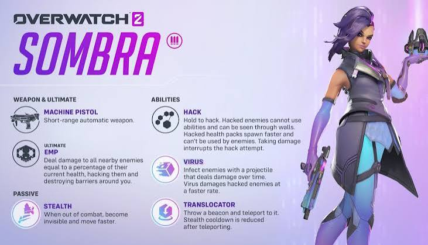

Sombra as a Damage Hero

Sombra was originally a Damage hero in Overwatch. She used hacking, stealth, and technology to sneak behind enemies and attack them. Instead of fighting head-on, she used tricks and strategy to surprise the other team.
Her Abilities
- Hack: Disables enemy abilities for a short time.
- Stealth: Allows her to become invisible.
- Translocator: Lets her teleport to another location.
- EMP: Hacks nearby enemies and disrupts their team.
Her Play Style
Damage Sombra was all about sneaking around, surprising enemies, and helping her team by disrupting the other side. She was a unique hero because she relied on hacking and timing instead of just dealing damage.